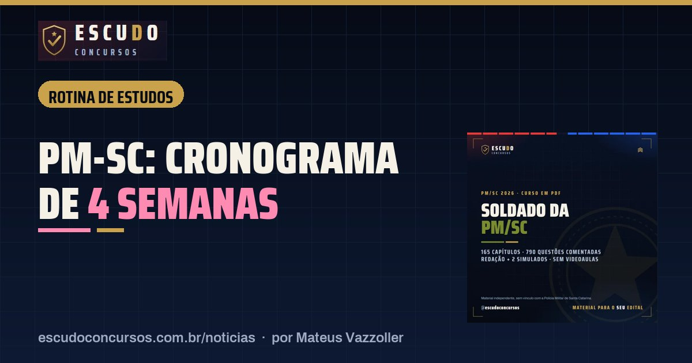

Cronograma de estudos PM-SC Soldado: 4 semanas até a prova de 13/12/2026
Rotina de estudosPublicado em 17 de novembro de 2026 · por Mateus Vazzoller, ESCUDO Concursos

As inscrições para Soldado da Polícia Militar de Santa Catarina fecharam em 16/11/2026, e quem se inscreveu tem agora 4 semanas até a prova objetiva e a redação do Instituto AOCP, em 13/12/2026. Este plano reparte 20 horas por semana pelo peso de cada disciplina no Edital nº 002/CCP/2026, coloca a Legislação Institucional da PMSC logo no começo e reserva a última semana para simulado e revisão.
| Prova | 13/12/2026, objetiva e redação, em até 5 horas |
|---|---|
| Tempo até a prova | 4 semanas a partir de 17/11/2026 |
| Carga sugerida | 20 horas por semana |
| Objetiva | 60 questões de A a E, mínimo de 30 pontos e nenhuma área zerada |
| Redação | 20 pontos, mínimo de 10, de 20 a 30 linhas |
| Locais de prova | divulgados em 02/12/2026 |
Como dividir 20 horas por semana?
A conta parte das 60 questões, cada uma valendo 1 ponto, e da redação, que vale 20 dos 80 pontos da nota final. As disciplinas com mais questões ganham mais horas, mas nenhuma fica sem horário: zerar Direito, Legislação ou Conhecimentos Comuns elimina.
| Área | Disciplina | Questões | Horas por semana |
|---|---|---|---|
| Legislação | Legislação Institucional | 10 | 3h30 |
| Direito | Direito Constitucional | 8 | 2h30 |
| Conhecimentos Comuns | Língua Portuguesa | 8 | 2h |
| Direito | Direito Penal Militar | 6 | 2h |
| Direito | Direito Penal Comum | 6 | 1h30 |
| Direito | Direito Processual Penal Comum | 6 | 1h30 |
| Legislação | Legislação Especial | 6 | 1h30 |
| Legislação | Legislação de Trânsito | 5 | 1h15 |
| Conhecimentos Comuns | Informática | 5 | 1h15 |
| Redação | Dissertação sobre Ordem Pública | 3h | |
| Total | 60 | 20h |
O Direito Penal Militar recebe meia hora a mais que o Penal comum, embora tenha o mesmo número de questões, porque quase ninguém chega a ele com base. A Legislação Institucional fica no topo: são 10 questões sobre as leis da própria corporação que o futuro Soldado vai integrar, do Estatuto dos Policiais Militares de Santa Catarina (Lei 6.218/1983) ao Conselho de Disciplina (Lei 5.209/1976).
Semana a semana até a prova
| Semana | Período | Foco |
|---|---|---|
| 1 | 17/11 a 22/11 | Legislação Institucional (Estatuto e organização básica da PMSC); Constitucional com o art. 144 e a Constituição de Santa Catarina; Português |
| 2 | 23/11 a 29/11 | Penal Militar (Parte Geral e Parte Especial); Penal e Processual Penal comuns; Legislação Especial, lei por lei |
| 3 | 30/11 a 06/12 | Código de Trânsito por artigos; Informática com LibreOffice 7 e Windows 11; releitura da Legislação Institucional; primeiro simulado |
| 4 | 07/12 a 13/12 | Simulado completo de 5 horas; só revisão dos erros; descanso na véspera, 12/12; prova em 13/12 |
Nas semanas 1 e 2, metade do tempo é teoria e metade é questão. Na semana 3, a proporção vira um quarto de teoria e três quartos de questão. Na semana 4 não entra conteúdo novo.
A redação é treinada toda semana, uma por semana nas três primeiras e uma dentro do simulado na quarta. Escreva à mão, entre 20 e 30 linhas, sobre um dos eixos do tópico Ordem Pública do Anexo II: sistema de justiça criminal, políticas públicas de ordem pública e cidadania, e a ordem pública na Constituição de 1988, com as competências das PMs e a PM como força auxiliar e reserva do Exército.
O que fazer na semana dos locais de prova?
Os locais saem em 02/12/2026, no meio da semana 3. Confira o seu no site do Instituto AOCP, veja o trajeto e calcule o tempo de deslocamento até o prédio na sua cidade de prova. Não há troca de cidade depois da inscrição.
Como montar o simulado da semana 4?
- Faça a prova inteira de uma vez: 60 questões e a redação em até 5 horas, contando o tempo de passar as respostas para a folha e de copiar a redação na folha definitiva.
- Corrija pela régua do edital: pelo menos 30 pontos na objetiva, nenhuma área zerada e, na redação, ao menos 10 dos 20 pontos.
- Anote em qual área você perdeu mais pontos e use os dias seguintes só nela.
O curso ESCUDO Soldado PM/SC 2026 em PDF traz 2 simulados com proposta de redação, o segundo liberado em 06/12/2026, bem na virada para a semana 4.
Se você tem menos tempo
Com 12 horas por semana, mantenha a ordem das semanas e a proporção: Legislação Institucional 2h, Direito 4h (Constitucional 1h30, Penal Militar 1h, Penal e Processual comuns 1h30), Legislação Especial e Trânsito 1h30, Português e Informática 2h30 e redação 2h. Não corte a redação: só é corrigida a de quem fica entre os 2.000 primeiros da objetiva, mas ela elimina quem tira menos de 10.
Curso ESCUDO Soldado da Polícia Militar de Santa Catarina em PDF: 165 capítulos e 790 questões comentadas, Redação e 2 simulados, de acordo com o edital. R$ 47.
Ver o curso
Perguntas frequentes
Dá para se preparar para a PM-SC em 4 semanas?
Dá para chegar competitivo se o tempo seguir o peso do edital: Legislação Institucional e Direito primeiro, redação toda semana e a última semana só de simulado e revisão.
Qual matéria estudar primeiro para Soldado PM-SC?
A Legislação Institucional, com 10 questões, a disciplina de maior peso da objetiva. Em seguida, Direito Constitucional e Língua Portuguesa, com 8 questões cada.
Quantas redações fazer até a prova da PM-SC?
Pelo menos quatro: uma por semana, à mão e entre 20 e 30 linhas, a última dentro do simulado completo de 5 horas.
Leia também
- Rotina de estudosCronograma de estudos TJSP Escrevente: 16 semanas até a prova de 14/03/2027
20 de novembro de 2026 · Plano de 16 semanas para a prova da Vunesp de 14/03/2027 para Escrevente do TJSP: 15 horas por semana, Direito primeiro e uma redação por semana.
- Rotina de estudosCronograma de estudos GM São Gonçalo: 10 semanas até a prova de 24/01/2027
19 de novembro de 2026 · Plano de 10 semanas para a prova do SELECON de 24/01/2027 na Guarda Municipal de São Gonçalo/RJ: 15 horas por semana, com as leis da Guarda valendo 40%.
- Rotina de estudosCronograma de estudos Contagem Assistente Administrativo: 10 semanas até a prova de 24/01/2027
18 de novembro de 2026 · Plano de 10 semanas para a prova do IBGP de 24/01/2027 em Contagem/MG: 15 horas por semana pelo peso de cada bloco. Inscrições prorrogadas até 03/12.
Guia completo do concurso: edital, vagas e o que cai · Mais notícias e dicas de concursos